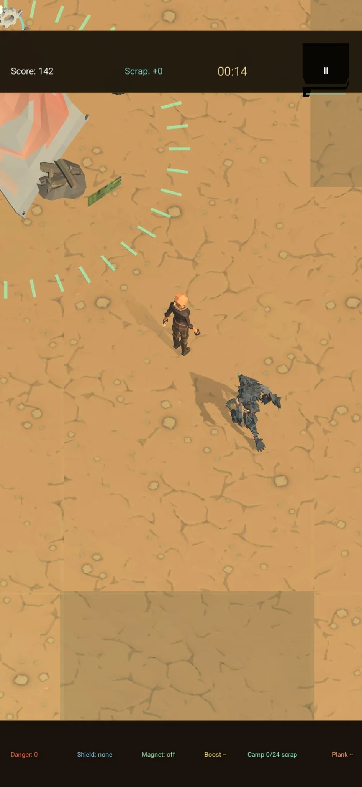
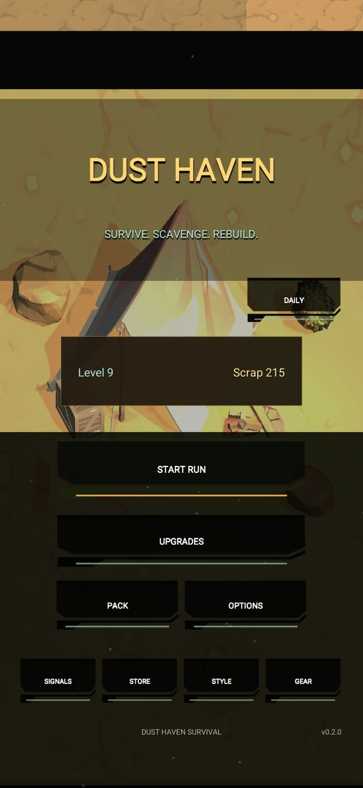
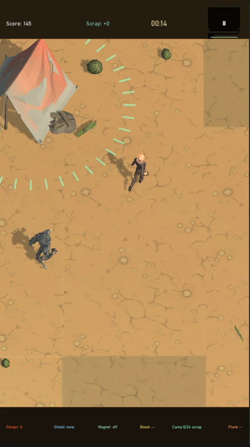

MOVEMENT & PRESSURE
Evade rather than aim
Drag to move through the portrait arena. Pursuing enemies increase the pressure, while specialist enemies introduce charging attacks and hazardous areas that require a change of route.
MOBILE GAME / IN DEVELOPMENT
Survive. Scavenge. Find your way back to camp.
A portrait-format survival arena game in which movement is your first defence. Dodge pursuing creatures, collect scrap, and choose when to return to the camp for temporary protection. Each run feeds into upgrades and discoveries that carry forward.



Screenshots supplied from the mobile prototype. They show existing screens, not a finished commercial release.
01 / THE CORE LOOP
A run starts near a home camp. The player moves through the arena, avoids enemies and collects scrap and temporary pickups. Entering the camp while it is ready triggers a defensive shockwave and a brief period of protection, but the refuge does not last. Collecting more scrap while it recharges creates a reason to leave safety and take calculated risks.
On death, a completed run settles earned scrap and experience, which can be used to improve the survivor before another attempt. The aim is a repeatable loop of movement decisions, resource management and gradual progression rather than a scripted campaign.
02 / SYSTEMS & DESIGN
MOVEMENT & PRESSURE
Drag to move through the portrait arena. Pursuing enemies increase the pressure, while specialist enemies introduce charging attacks and hazardous areas that require a change of route.
RISK & REWARD
Ordinary scrap and timed caches contribute to the run economy. After the camp's protection ends, collecting scrap restores its readiness, connecting a player's route through the arena to the next moment of safety.
PERSISTENT PROGRESSION
Earn experience and scrap, buy permanent upgrades and consumables, and collect survivors and equipment. These systems give completed attempts a purpose beyond their score.
NARRATIVE & ACCESSIBILITY
Collectible Signals reveal the mystery of HAVEN across multiple runs. The prototype also includes colour-vision palettes, a high-contrast option and non-colour gameplay cues, with hands-on accessibility testing still to do.
03 / DEVELOPMENT & NEXT STEPS
I created Dust Haven as an original mobile survival game, taking it from an initial concept to a playable prototype with interconnected gameplay, progression and narrative systems.
I designed the core survival loop around scavenging, evading enemies and returning to a temporary safe camp. From there, I developed the game's progression systems, equipment, enemy behaviours and collectible narrative, continually refining how these elements work together.
Throughout development, I've focused on building a game that can continue to grow. My workflow includes regular testing, reviewing and refining existing systems, and using development tools such as OpenAI Codex to support code review, debugging and maintainability.
My next priorities are expanding mobile-device testing, refining gameplay balance, improving interface readability and completing the remaining polish ahead of a future release.
MORE PROJECTS
Dust Haven is still in development. My portfolio also includes completed Unity work and a separate, interactive demonstration of a youth football management app.